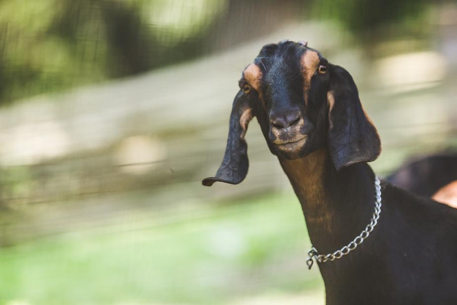

colinepicard@gmail.com
@rock_prick Je m'apelle Coline Picard aka Oblio Pic. Après avoir intégré en 2018 le grouppe de recherche en micro-édition EDITH, j’ai décidé de consacrer mes deux dernière année de DNSEP à la micro-édition. Les recherches théorique effervescentes, l’archive, les théorie queer, féministe, écologiste, on été des thématiqes structurantes de mon année de diplôme. Qui ont par la suite nourris ma production éditorial naviguant entre amour inter-espèce, récit non-antropocentré, poé/politique du vivant.
Une fois mon diplôme en poche, je suis parti étudier le graphisme à Amiens, afin de pousser plus loin les recherches graphique qui parcourent ma pratique. Cette discipline étant pour moi une manière de donner corp au idée et valeurs qui struturent mon travail. J’ai voulu découvrir qu’elle formes allé bien pourvoir découler de la rencontre de mon univers do it youself kitch et des apprentissage des savoirs graphique.
Parcours : L1 Arts Plastiques Amiens 2016 + DNSEP option ART ESADHAR Rouen 2021 + 2ème année DNA graphisme ESAD Amiens 2021
retour